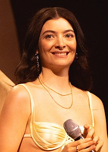

Welcome To the Lorde Fan Club
This is a fan page for the musician Lorde! Here you can find some information about her here that came from wikipedia:
Ella Marija Lani Yelich-O'Connor (born 7 November 1996), known professionally as Lorde, is a New Zealand singer-songwriter. Taking inspiration from aristocracy for her stage name, she is known for her unconventional musical styles and introspective songwriting. Lorde expressed interest in performing at local venues in her early teens. She signed with Universal Music Group (UMG) in 2009 and collaborated with producer Joel Little in 2011 to start recording music. Their first effort, an extended play (EP) titled The Love Club, was self-released in 2012 for free download on SoundCloud before UMG's commercial release in 2013. The EP's international chart-topping single "Royals" helped raise Lorde to prominence. Her debut studio album Pure Heroine was released that same year to critical and commercial success. The following year, Lorde curated the soundtrack for the 2014 film The Hunger Games: Mockingjay – Part 1 and recorded several tracks, including the single "Yellow Flicker Beat". Lorde's second studio album Melodrama (2017) received widespread critical acclaim and debuted atop the US Billboard 200. For her third studio album, Solar Power (2021), she ventured into indie folk and psychedelic styles. The album reached number one in Australia and New Zealand and charted inside the top-10 in numerous countries, although it polarised music critics and fans alike. Lorde's accolades include two Grammy Awards, two Brit Awards, and a Golden Globe nomination. She appeared in Time's list of the most influential teenagers in 2013 and 2014, and the 2014 edition of Forbes 30 Under 30. In addition to her solo work, she has co-written songs for other artists, including Broods and Bleachers. As of June 2017, Lorde has sold over five million albums worldwide.
Add Yourself as a Fan!
Name: